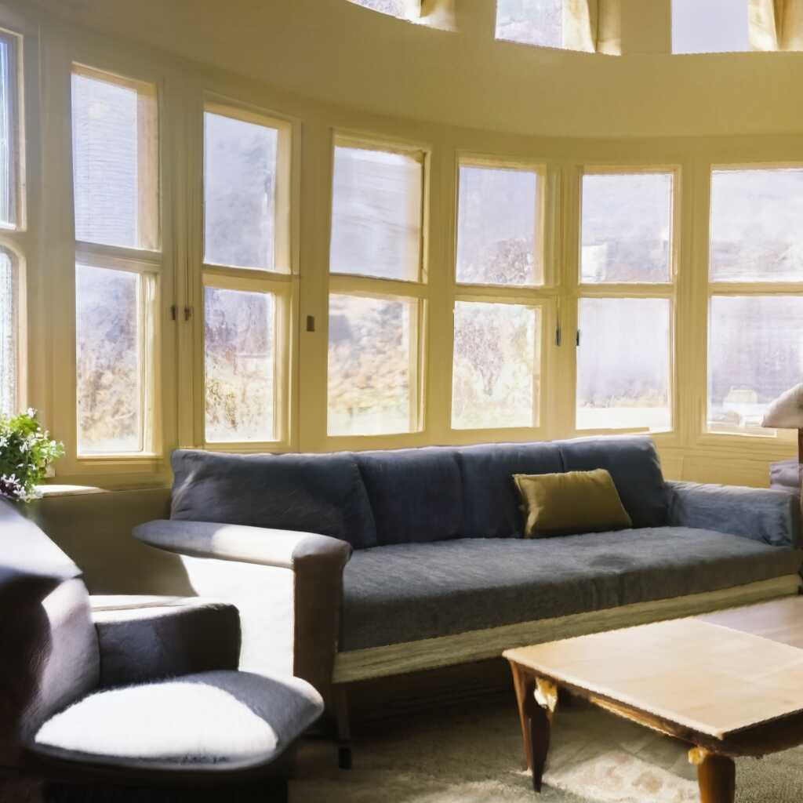
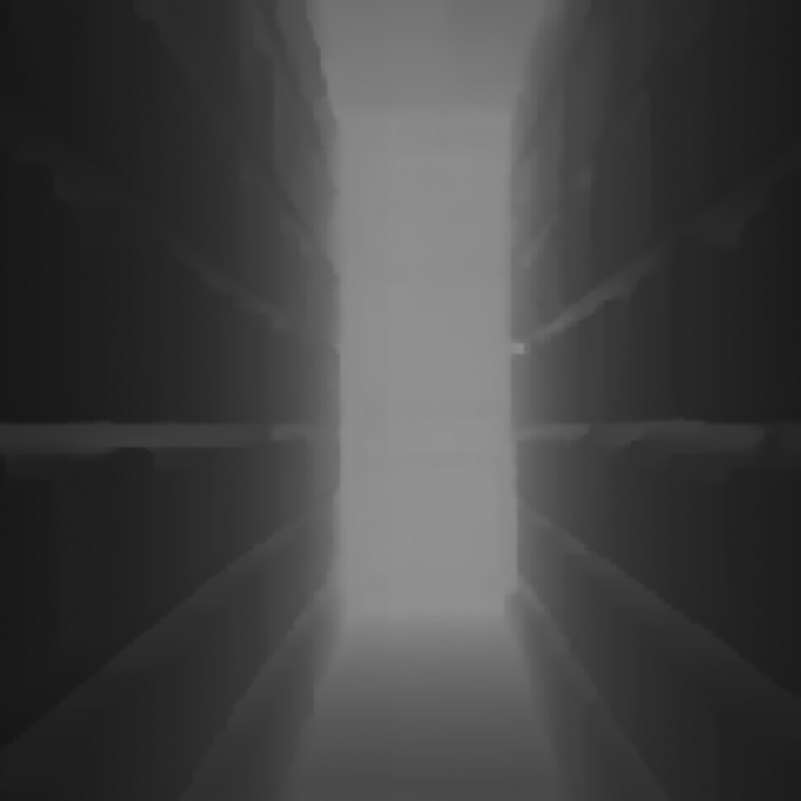
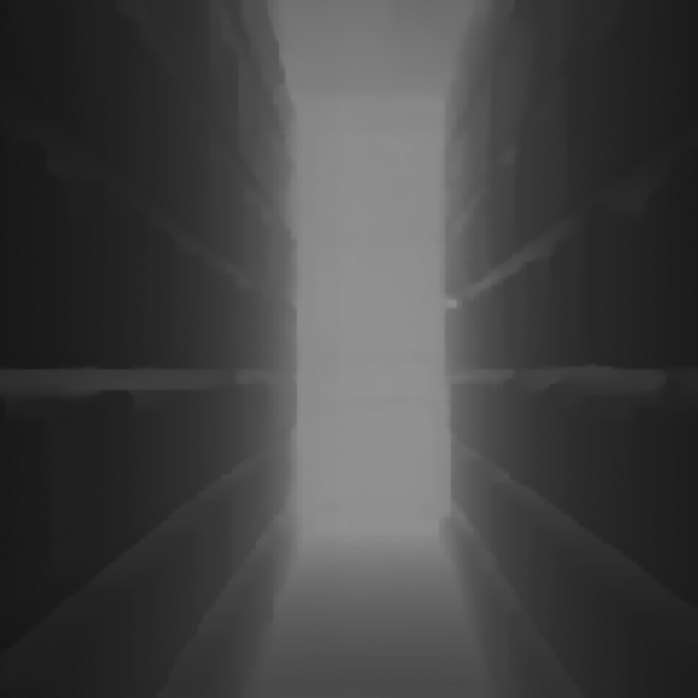
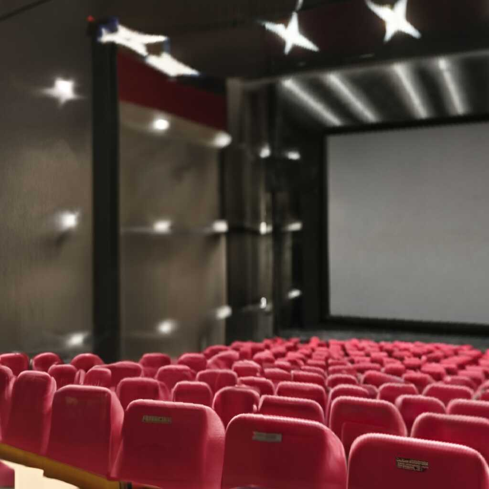
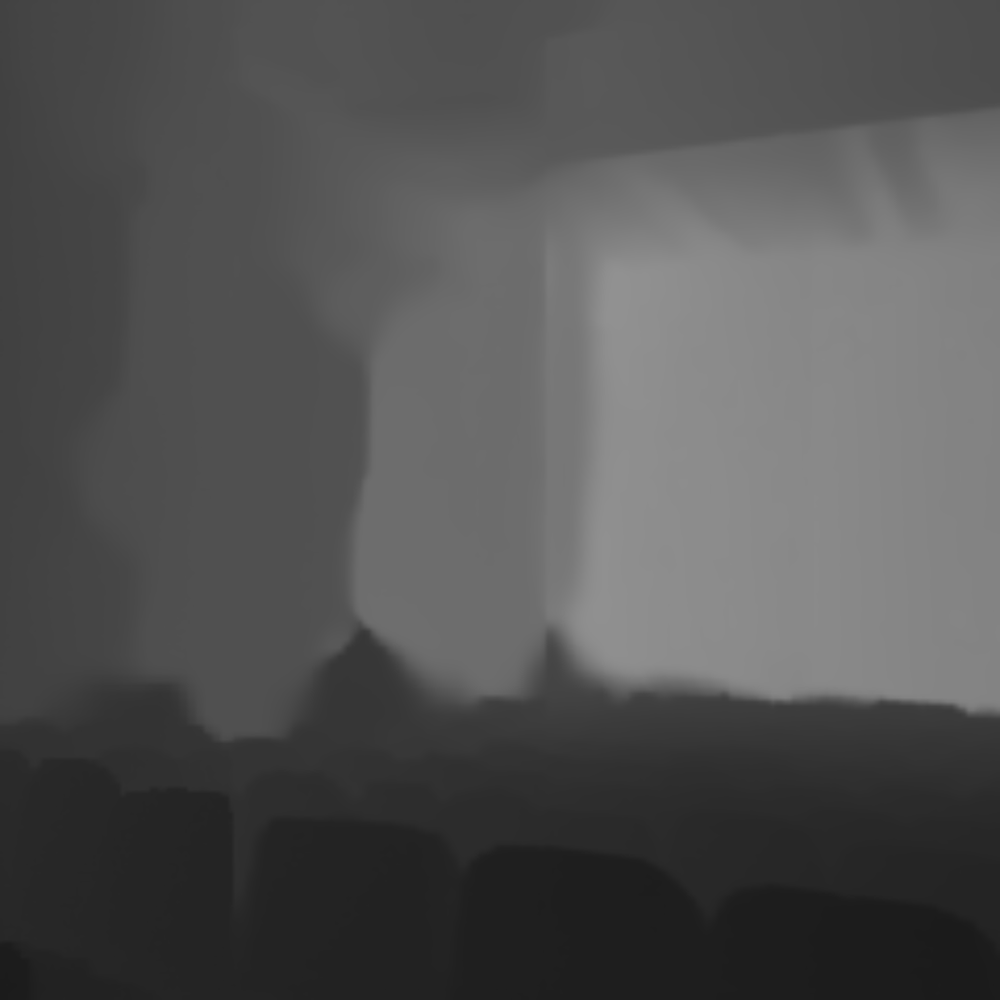
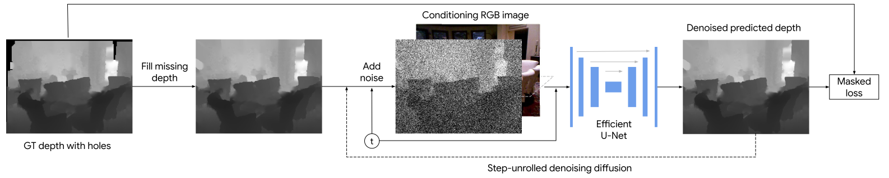

Monocular Depth Estimation using Diffusion Models
Caption: A meeting room

Caption: A living room

Caption: A library
 

Caption: A movie theatre
Abstract
We formulate monocular depth estimation using denoising diffusion models, inspired by their recent successes in high fidelity image generation.
To that end, we introduce innovations to address problems arising due to noisy, incomplete depth maps in the training data such as step-unrolled denoising diffusion, use of an L1 loss, and depth infilling during training.
To cope with the limited availability of data for supervised training, we leverage pre-training on self-supervised image-to-image translation tasks.
Despite the simplicity of the approach, with a generic loss and architecture, our DepthGen model achieves SOTA performance on the indoor NYU dataset, and near SOTA results on the outdoor KITTI dataset.
Further, with a multimodal posterior, DepthGen naturally represents depth ambiguity (e.g., from transparent surfaces), and the model's support for imputation, combined with it's robust zero-shot performance, enables a simple but effective text-to-3D pipeline.
Approach
Given a groundtruth depth map, we first infill missing depth using nearest neighbor interpolation. Then, following standard diffusion training, we add noise to the depth map and train a neural network to predict the noise given the RGB image and noisy depth map. During finetuning, we unroll one step of the forward pass and replace the groundtruth depth map with the prediction.
Results
DepthGen achieves SOTA absolute relative error of 0.074 on the indoor NYU depth v2 dataset and a competitive relative error of 0.064 on the outdoor KITTI dataset.
Text to 3D
We combine DepthGen with off-the-shelf text-to-image (Imagen) and text-conditioned image completion (Imagen Editor) models to build a simple text-to-3D pipeline as illustrated in the figure above. Below are 3D point clouds of some scenes generated from the respective text prompts (subsampled 10x for fast visualization).
A kitchen
A bedroom
BibTeX
@article{saxena2023monocular,
title={Monocular Depth Estimation using Diffusion Models},
author={},
journal={},
year={2023},
}